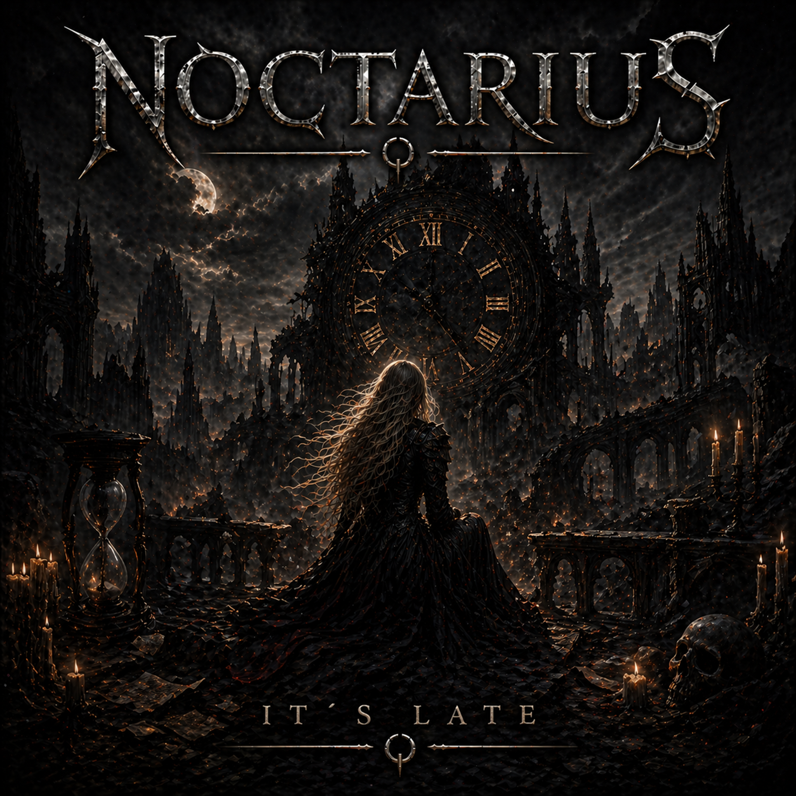

NOCTARIUS
It's Late

A Symphony of Ashes
It’s late, and all the city lights
Are fading underneath the falling rain.
I’m tracing every word we said,
All the promises we left for some other day.
And though I try to walk away,
Your name keeps pulling me back into the pain.
I held the world inside my hands,
But somehow I let you slip from me.
Now I’m racing through the shadows,
Trying to find where our ending used to be.
Is it too late to turn around?
Or can I still reach you somehow?
Through every mistake I tried to hide,
And every truth I kept inside…
If there’s still a spark of what we were,
Just call — and I’ll run back to you.
I know you carried all your secrets,
And I was scared to let you see my own.
We tried to fill the empty spaces
With words that never felt like “letting go.”
But every step you take away
Becomes an echo shaking me down to the bone.
If I could bend the hands of time,
Rewrite the shape of our sunrise…
I’d chase away every shadow
That made you wish to say goodbye.
Is it too late to turn around?
Or can I still reach you somehow?
Through every mistake I tried to hide,
And every truth I kept inside…
If there’s still a spark of what we were,
Just call — and I’ll run back to your voice.
And when the night grows loud around me,
I feel the weight of what I lost.
I cry your name into the darkness,
But I know you can’t hear my voice at all.
Still I keep on moving forward,
’Cause something in me refuses to let you fall…
It’s late, but I still whisper your name.
It’s late, but the memory burns like a flame.
If fate decides to shift again,
And our paths collide just like back then…
I’ll be right there, I promise I will —
It’s late, but loving you lingers still.